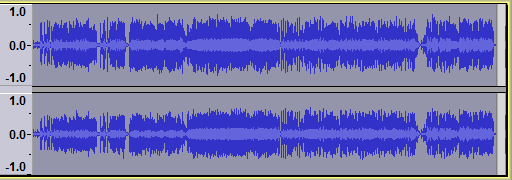
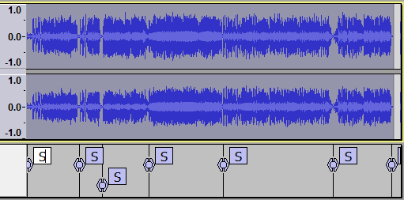
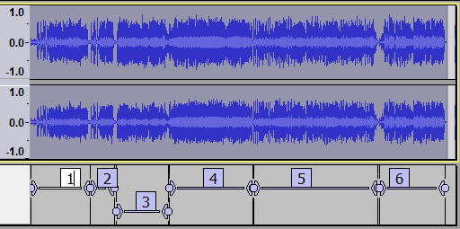

Silence Finder and Sound Finder
This page provides examples comparing and contrasting the use of the two tools.
The main difference is that Silence Finder divides up a selection by placing point labels inside areas of silence, wherwas Sound Finder divides up a selection by placing region labels for areas of sound that are separated by silence.
Here is a stereo track with six songs. The entire project is selected prior to using the Analyze functions.
- 
Example with Silence Finder
After running we can see that Audacity has identified the six songs, placing an "S" label just before the beginning of each song plus a seventh label at the end (as the final track ends in silence).
- 
Example with Sound Finder
If instead we run on the same selected audio we can see that Audacity has again identified the six songs giving them numerical labels. The labels exclude a small amount of the gaps between the songs (seen most clearly between labels 5 and 6) so the lead-in and lead-out for each song would be shorter.
- 